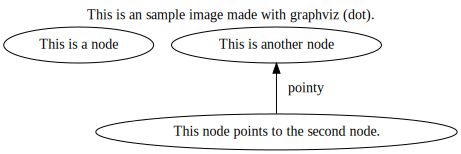

Welcome to my github page!
Not quite sure what is going to be here, but I thought I'd set up something for funsies. Perhaps having a place to put stuff would motivate me to create stuff, who knows.
I'm trying out some things with vimwiki and github pages, let's see if it works.
Test: Here is a link to a short wiki page about me.
In the meantime, here's a test image made in graphviz:

I don't know what it is, but there's just something comfy about graphviz. Except for Warning: flat edge between adjacent nodes one of which has a record shape. It scares me.
Most things on this page will be available in this repo's source, or have links to other sources.
I might write some entries in the Diary (like today!), and I might do some wiki-based writing about what's on my mind, what I'm working on, or perhaps just things that amuses or intrigues me. We'll see.
Perhaps I might mention some of the sheet music I've been transcribing, on my scores repo. (Mostly male choir so far, since that's what I've been singing the most.)
I've also had a running gag for a while that I have a long term plan for a cool music project that mostly involves describing vague cool ideas and hoping for someone else with more time and skill to actually create it. We'll see how that works out, but actually trying to present my vague ideas in writing may make them less vague. Maybe.
One vague idea is something like: "You know LLVM? How about that, but for music!? Cool, right?!".
Any takers? :P
More things to come(?)